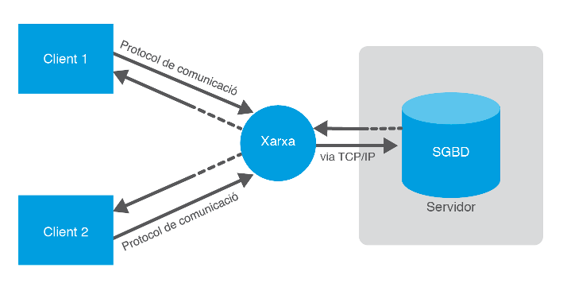

3 - Connexió a les BD: Connectors¶
Deixem de banda de moment el desfasament Objecte-Relacional i centrem-nos ara en l'accés a Base de Dades Relacionals des dels llenguatges de programació. Ho raonarem en general i ho aplicarem a Java-Kotlin.
Des de la dècada dels 80 que existeixen a ple rendiment les Bases de Dades Relacionals. Quasi tots els Sistemes Gestors de Bases de Dades (excepte els més xicotets com Access, Base de LibreOffice o SQLite) utilitzen l'arquitectura client-servidor. Això vol dir que hi ha un ordinador central on està instal·lat el Sistema Gestor de Bases de Dades Relacional que actua com a servidor, i hi haurà molts clients que es connectaran al servidor fent peticions sobre la Base de Dades.
Els Sistemes Gestors de Bases de Dades inicialment disposaven de llenguatges de programació propis per a poder fer els accesos des dels clients. Era molt consistent, però a base de ser molt poc operatiu:
- L'empresa desenvolupadora del SGBD havia de mantenir un llenguatge de programació, que resultava necessàriament molt costós, si no volien que quedara desfasat.
- Les empreses usuàries del SGBD, que es connectaven com a clients, es trobaven molt lligades al servidor per haver d'utilitzar el llenguatge de programació per accedir al servidor, cosa que no sempre s'ajustava a les seues necessitats. A més, el plantejar-se canviar de servidor, volia dir que s'havien de re-fer tots els programes, i per tant una tasca de moltíssima envergadura.
Per a poder ser més operatius, calia desvincular els llenguatges de programació dels Sistemes Gestors de Bases de Dades utilitzant uns estàndars de connexió.
3.1 - ODBC¶
A mida que les teories de dades relacionals anaven agafant força i les xarxes guanyaven adeptes gràcies a l’increment de l’eficiència a preus realment competitius, van començar a implementar-se uns Sistemes Gestors de Bases de Dades basats en la tecnologia client-servidor, que van triomfar.

La tecnologia client-servidor va permetre aïllar les dades i els programes específics d’accés a aquestes dades, del desenvolupament de l’aplicació. La raó principal d’aquesta divisió va ser segurament possibilitar l’accés remot a les dades de qualsevol ordinador connectat a la xarxa. El cert, però, és que aquest fet va empènyer els Sistemes de Bases de Dades a desenvolupar-se d’una forma aïllada i a crear protocols i llenguatges específics per poder-se comunicar remotament amb les aplicacions que corrien en els clients. Per dir- lo d'alguna manera, havien de desenvolupar els servidors i també els clients, per a poder connectar-se amb el servidor.
A poc a poc, el software al voltant de les bases de dades va créixer espectacularment intentant donar resposta a un màxim de demandes a través de sistemes altament configurables. És el que avui dia es coneix com a middleware o capa intermèdia de persistència. És a dir, el conjunt d’aplicacions, utilitats, biblioteques, protocols i llenguatges, situats tant a la part servidor com a la part client, que permeten connectar-se remotament a una base de dades per configurar-la o explotar-ne les seues dades.
L'arribada dels estàndards
Inicialment, cada empresa desenvolupadora d’un SGBD implementava les seues solucions específiques per al seu sistema, però prompte es van donar compte que col·laborant conjuntament podien treure’n major rendiment i avançar molt més ràpidament.
Sostenint-se en el Model Relacional i en algunes implementacions primerenques de les empreses IBM i Oracle, es va desenvolupar el llenguatge de consulta de dades anomenat SQL(Structured Query Language). Va ser un gran pas endavant, perquè s'uniformava la manera d'accedir a la BD, però les aplicacions necessitaven API amb funcions que permeteren fer crides des del llenguatge de desenvolupament per enviar les consultes SQL.

Cada SGBD té la seua pròpia connexió i el seu propi API.
El grup anomenat SQL Access Group, en el qual participaven prestigioses empreses del sector com Oracle, Informix, Ingres, DEC, Sun o HP, va definir un API universal amb independència del llenguatge de desenvolupament i la Base de Dades a connectar.

El 1992, Microsoft i Simba implementen l’ODBC (Open Data Base Connectivity), un API basat en la definició del SQL Acces Group, que s’integra en el sistema operatiu de Windows i que permet afegir múltiples connectors (o controladors o Drivers) a diverses Bases de Dades Relacionals (que utilitzen SQL) de forma molt senzilla i transparent, ja que els connectors són autoinstal·lables i totalment configurables des de les mateixes eines del Sistema Operatiu. D'aquesta manera, tenint instal·lat ODBC (i en Windows acabarà venint instal·lat per defecte), les aplicacions es connectaran a través d'ODBC a qualsevol dels SGBD del qual tinguem instal·lat el connector. Per a connectar a una Base de Dades o una altra, només hem de canviar de controlador, sense haver de canviar la pròpia aplicació.

L’arribada de l’ODBC va representar un pas sense precedents en el camí cap a la interoperabilitat entre bases de dades i llenguatges de programació. La majoria d’empreses desenvolupadores de Sistemes Gestors de Bases de Dades van proporcionar els drivers de connectivitat, i els llenguatges de programació més importants van desenvolupar biblioteques específiques per suportar l’API ODBC.
La situació actual
Actualment, ODBC continua sent una adequada manera de connectar als SGDB Relacionals. El seu desenvolupament segueix liderat per Microsoft, però existeixen versions per a altres Sistemes Operatius com UNIX/LINUX o MAC. Els llenguatges més populars de desenvolupament mantenen actualitzades les biblioteques de comunicació amb les successives versions que han anat apareixent i la majoria de SGBD disposen d’un controlador ODBC bàsic. I per tant la connexió queda garantida.
Actualment, l’ODBC s’estructura en tres nivells. El primer, anomenat core API, és el nivell més bàsic corresponent a l’especificació original (basada en el SQL Access Group). El Level 1 API i el Level 2 API afegeixen funcionalitats avançades, com cridades a procediments guardats en el Sistema Gestor de Bases de Dades, aspectes de seguretat d’accés, definició de tipus estructurats, etc.
En realitat, l’ODBC és una especificació de baix nivell, és a dir, de funcions bàsiques que possibiliten la connexió, que asseguren l’atomicitat de les peticions, el retorn d’informació, el capsulament del llenguatge de consulta SQL o l’obtenció de dades aconseguides en resposta a un petició.
La funcionalitat de baix nivell fa que es puga adaptar a moltes aplicacions; això sí, a costa d’un considerable nombre de línies de codi necessàries per adaptar-se a la lògica de cada aplicació. És per això que sobre la base de l’ODBC han sorgit altres alternatives de persistència de més alt nivell. Per exemple, Microsoft ha desenvolupat OLE DB o ADO.NET. Aquest últim possibilita ja els objectes per a qualsevol tipus d’aplicació basada en la plataforma .NET.
3.2 - JDBC¶
Pràcticament de forma simultània a ODBC, l’empresa Sun Microsystems, l’any 1997 va treure a la llum JDBC (Java DataBase Connectivity), un API connector de bases de dades, implementat específicament per a utilitzar amb el llenguatge Java. Es tracta d’un API molt similar a ODBC quant a la manera de funcionar:
- Tindrem l'API JDBC que utilitzaran les aplicacions que vulguen connectar a les Bases de Dades, i que garatitza una uniformitat, siga quina siga la o les Bases de Dades a connectar
- Ens farà falta un controlador o driver per cada Base de Dades a la qual vulguem connectar
Però com comentàvem, està adaptat específicament per a Java. És a dir, la funcionalitat es troba encapsulada en classes (ja que Java és un llenguatge totalment orientat a objectes) i a més, no depèn de cap plataforma especifica, d’acord amb la característica multiplataforma defensada per Java.
Aquest connector serà l’API que estudiarem en detall en aquesta unitat, ja que Java no disposa de cap biblioteca específica ODBC. Les raons esgrimides per Sun són que ODBC no es pot fer servir directament en Java ja que està implementat en C i no és orientat a objectes.
Però, per a no perdre la potencialitat de les connexions ODBC, que recordem que ens permetia connectar a qualsevol Base de Dades Relacional, Sun Microsystem ha optat per incorporar de sèrie un driver especial que actua d’adaptador entre l’especificació JDBC i l’especificació ODBC. Aquest controlador s’acostuma a anomenar també pont JDBC-ODBC (bridge en anglès). Utilitzant aquest driver podrem enllaçar qualsevol aplicació Java amb qualsevol connexió ODBC.
Actualment, la gran majoria d’SGBD disposen de drivers JDBC, però en cas d’haver de treballar amb un sistema que no en tinga, si disposa de controlador ODBC, podrem fer servir el pont JDBC-ODBC per aconseguir la connexió des de Java.
Arquitectura JDBC¶
- La biblioteca estàndard JDBC conté un gran nombre d’interfícies sense les classes que les implementen.
- Els controladors o drivers dels SGBD concrets (i que els proporciona el fabricant del SGBD) són els que han d'implementar les interfícies anteriors i així accedir a les seues dades amb les particularitats que puga tenir el SGBD en concret.
Des de les aplicacions s'utilitzaran les interfícies de JDBC, i d’aquesta manera, el controlador utilitzat serà totalment transparent a l’aplicació.
D’aquesta manera s’aconsegueix independitzar l’aplicació dels controladors permetent la substitució del controlador original per qualsevol altre compatible JDBC sense pràcticament necessitat d’haver de modificar el codi de l’aplicació.

D'una banda trobem les interfícies definides a l'estàndard (les figures amb fons transparent). Es tracta de l'API amb el que l'aplicació treballarà de forma directa.
De l'altra banda trobem les classes específiques del controlador (driver) que
interaccionen amb el SGBD i que implementen les interfícies de l'estàndard
JDBC. Són les figures amb fons de diferents colors
És important destacar que JDBC no exigeix cap instal·lació, ni cap canvi substancial en el codi a l’hora de fer servir un o altre controlador. I fins i tot podrem utilitzar més d'un controlador per a poder connectar des de la mateixa aplicació a més d'un SGBD. Això és possible perquè:
- Java permet carregar en memòria qualsevol classe a partir del seu nom, i així carregar el o els controladors que necessitem. Es fa amb la sentència Class.forName (“nom_de_la_Classe”).
- La classe DriverManager (de l’API JDBC) és capaç de seleccionar el driver adequat d'entre tots els que estiguen carregats en memòria, sense necessitat d’indicar-li el driver específic que cal fer servir.
Tipus de controladors¶
JDBC distingeix quatre tipus de controladors:
1. Tipus I. Controladors pont (bridge driver) com JDBC-ODBC. Es caracteritzen per fer servir una tecnologia externa a JDBC i actuar d’adaptador entre les especificacions de l’API JDBC i la tecnologia concreta utilitzada. El més conegut és el controlador pont JDBC-ODBC , però n’hi ha d’altres, com JDBC-OLE DB. La seua principal raó de ser és la de permetre utilitzar l'altra tecnologia (ODBC) que està molt estesa i assegurar així la connexió amb pràcticament qualsevol font de dades. Cada client:
- Haurà de tenir instal·lada una utilitat de gestió i configuració de fonts de dades ODBC (o de la tecnologia utilitzada)
- Haurà de tenir instal·lat el driver ODBC específic del’SGBD al qual es vol accedir
- A través de la primera utilitat crear un DSN (Data Source Name) que utilitze el driver del SGBD amb les dades de connexió al SGBD
Com que la connexió és a través de ODBC (no directament) pot donar problemes de rendiment i, per tant, s’aconsella fer servir aquest tipus de controlador només com a última alternativa.

2. Tipus II. Controladors de Java amb API parcialment nadiu (Native- API partly Java driver). S’anomenen també simplement nadius. Com el seu nom indica, estan formats d’una part codificada en Java i una altra part que usa biblioteques binàries instal·lades en el sistema operatiu. Aquest tipus de controladors existeixen perquè alguns Sistemes Gestors de Bases de Dades tenen entre les seues utilitats de sèrie connectors propis. Solen ser connectors propietaris que no segueixen cap estàndard, ja que acostumen a ser anteriors a ODBC o JDBC, però es mantenen perquè solen estar molt optimitzats i són molt eficients. Utilitzant una tecnologia Java anomenada JNI és possible implementar classes, els mètodes de les quals invoquen funcions de biblioteques binàries instal·lades en el sistema operatiu. Els controladors de tipus II utilitzen aquesta tecnologia per crear les classes implementadores de l’API JDBC. En alguns casos pot requerir una instal·lació extra de certes utilitats a la part client, exigides pel connector nadiu del sistema gestor.

3. Tipus III. Controladors de Java via protocol de xarxa. Es tracta d’un controlador escrit totalment en Java que tradueix les cridades JDBC a un protocol de xarxa contra un servidor intermedi (anomenat normalment Middleware) que pot estar connectat a diversos SGBD. Aquest tipus de driver presenta l’avantatge que utilitza un protocol independent dels SGBD i, per tant, el canvi de font de dades es pot fer de manera totalment transparent als clients. Això el converteix en un sistema molt flexible, encara que per contra, es necessitarà instal·lar, en algun lloc accessible de la xarxa, un servidor intermedi connectat a tots els SGBD que calga. Aquest tipus de controladors són molt útils quan hi ha un número molt gran de clients, ja que els canvis d’SGBD no requeriran cap canvi en els clients, ni tan sols la incorporació d’una nova biblioteca.

4 Tipus IV. Controladors de tipus Java pur o Java 100%. S’anomenen també controladors de protocol nadiu. Són controladors escrits totalment en Java. Les peticions al Sistema Gestor de Bases de Dades es fan sempre a través del protocol de xarxa que utilitza el propi SGBD i, per tant, no es necessita ni codi nadiu en el client (com en el cas del tipus II) ni servidor intermedi (com en el cas del tipus III) per connectar amb la font de dades. Es tracta, doncs, d’un driver que no requereix cap tipus d’instal·lació ni requeriment, la qual cosa el fa ser una alternativa molt ben considerada que en els últims temps ha acabat imposant-se. De fet, la major part de fabricants ha acabat creant un controlador de tipus IV, tot i que segueixen mantenint també els dels altres tipus.

Els tipus desitjables són el tipus III i sobretot el tipus IV , ja que d'aquesta manera no ens fa falta instal·lar res per a poder connectar.
En aquest tema intentarem connectar a 3 Sistemes Gestors de Bases de Dades diferents: PostgreSQL , MySQL i SQLite
Els drivers o controladors (tots de tiups IV) us els podeu baixar sense problemes. Són fàcils de trobar, únicament amb un buscador posar jdbc i el Sistema Gestor de Bases de Dades (per exemple jdbc postgresql). De tota manera, per més comoditat, teniu una carpeta en el curs de Aules amb tots els drivers que ens fan falta.
Llicenciat sota la Llicència Creative Commons Reconeixement CompartirIgual 2.5